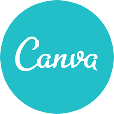
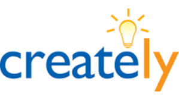
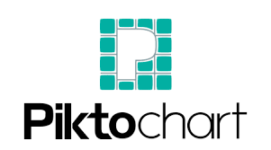
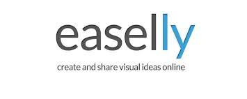
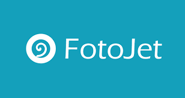
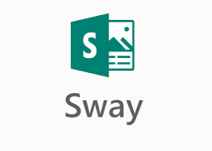

Existen diferentes niveles de complejidad en el desarrollo de presentación de información. Sin embargo, dada la facilidad de uso que otorgan hoy en día muchas Apps, se puede llevar a cabo el diseño y realización de ilustraciones, íconos o presentaciones con sólo disponer de conocimientos mínimos de informática. La evolución del Software ha permitido que podamos utilizar diversos tipos de Apps sin necesitar de conocer lenguajes de programación y sin conocimientos previos de diseño. Además de las conocidas herramientas Word, PowerPoint, Inspiration, Prezi, entre otras, se puede tener acceso en Internet a diversas sugerencias que permiten convertir las ideas en material, de forma rápida y sencilla.
Ejercicio Práctico de Herramientas para Presentar Información
Herramientas para Ilustraciones, Íconos, Presentaciones
Canva

Es un software y sitio web de diseño gráfico y composición de imágenes simplificado. Se puede utilizar de forma gratuita, pero con la alternativa de pagar para tener opciones avanzadas. Entre los diseños que puedes crear tienes logo, posters, flyers, portadas, folletos y publicaciones para redes sociales entre otras cosas.
Funciona utilizando tus datos de Google, Facebook o correo y bajo plataformas Windows, Mac, Linux, iOS, Android. Puede ser usada en navegadores como Chrome, Firefox, Edge o Safari y exportar archivos en PNG, PDF, JPG, GIF y video MP4. Es recomendado usarlo en una PC, tiene muchos recursos y sus herramientas te garantizan un trabajo profesional.
Tiene una interfaz intuitiva y fácil de utilizar, con varias plantillas y elementos multimedia que puedes agregar. Se puede bajar de https://www.canva.com/ y podrás ver cómo utilizar esta herramienta en https://www.youtube.com/watch?v=kdE6ZmT_5MI
Creately
 .
Es una Herramienta para la colaboración en equipo que utiliza diagramas, imágenes y texto para colaborar en línea en tiempo real. Es compatible con más de 50 tipos de diagramas de flujo, mapas mentales, organigramas, diagramas de red, diagramas de Gantt y más. Se utiliza como una pizarra colaborativa. Es una aplicación basada en la nube, por lo que se puede acceder a todos los archivos desde cualquier dispositivo. Se puede usar de una manera muy sencilla y con la cual podrás Exportar diagramas en PNG, JPEG, PDF, SVG, GIF, BMP, ICO, ETC. Se usa en campos desde marketing hasta ingeniería. El plan básico de Creately es gratis. Que permite crear 5 documentos públicos gratuitos y trabajar con hasta 3 colaboradores. La versión que incluye documentos ilimitados tiene un costo adicional. Puedes tener acceso desde https://creately.com/es/home/. Este es un Video que te muestra cómo utilizarlo: https://www.youtube.com/watch?v=5a2cc53sgMs
Picktochart

Es una herramienta en línea que nos permite diseñar y crear infografías para nuestros proyectos o presentaciones de forma gratuita, es fácil para registrarse y de usar, no lleva mucho tiempo aprender a manejarlo. La puedes localizar en https://piktochart.com/
Cuenta con múltiples opciones para gráficos, dispone de una amplia biblioteca y es un programa que no necesitas tener mucho conocimiento de HTML como a diferencia de otros programas parecidos. Permite exportar la infografía en PNG, JPG, HTML y publicarla en redes sociales. A través de este enlace se observa cómo utilizar esta herramienta: https://www.youtube.com/watch?v=4lo6XPRrg9Q
Easelly

Es un atractivo recurso online que nos permite diseñar, crear y compartir infografías de manera sencilla, con un toque profesional. Hay una opción gratuita y otra de pago a la cual tiene acceso otros elementos. Para comenzar a usar Easel.ly solo tienes que registrarte si deseas poder compartir el proyecto. Permite organizar lo aprendido en clase en forma de contenido visual en un espacio reducido. Este recurso es compatible con todos los sistemas operativos. Una vez acabada la infografía puedes guardarla, y abrirla posteriormente si quieres realizar algún cambio más. Asimismo, Easel.ly también te permite exportarlo como archivo de imagen o compartirlo con otros usuarios en su entorno web o en otras redes.
La herramienta la puedes encontrar en: https://www.easel.ly/. En este vídeo se explica la forma como utilizarla: https://www.youtube.com/watch?v=AiQX-DPe74c
Fotojet

Es una herramienta de diseño gráfico que permite la edición de fotos y crear collages online. Te permite crear increíbles posters, flyers, comics, logotipos, banners, imágenes para redes sociales, collages, memes y tarjetas fotográficas.
Cuenta con varias herramientas fáciles de usar para agregar texto a las imágenes, redimensionar, recortar, rotar. También puede aplicar filtros y otros efectos. Te ofrece más de 900 diseños profesionales, más de 500 plantillas de collages creativos, más de 80 cuadrículas de fotos clásicas y numerosas herramientas de edición de gran potencia. Es una herramienta que sirve para crear algo rápido y de calidad para personas sin habilidades para diseño.
Puedes tener acceso a ella a través de https://www.fotojet.com/ y ver cómo funciona por medio de https://www.youtube.com/watch?v=WcAuTUwrdrQ
Sway

Office Sway es una novedosa aplicación a utilizarse a través de la Web. Su uso es para expresar las ideas de una manera muy peculiar en presentaciones o proyectos de investigación. Los archivos de Sway se guardan de manera automática en la nube de la aplicación, para que puedas acceder a ellos en cualquier lugar, siempre y cuando tengas acceso a internet. Sin embargo, puedes obtener una vista de tu proyecto en formato Word o PDF.
Se puede obtener por medio del Sitio Web Office Microsoft. Realmente es una forma revolucionaria de realizar presentaciones, que incluso, algunos expertos ya aseguran que esta nueva aplicación puede dejar atrás al clásico PowerPoint debido a su sistema vanguardista de exposición y manera de ver los datos.
Puedes ver cómo funciona en: https://www.youtube.com/watch?v=VYupWotPvzo
...
Otros generadores de carteles, posters, infografías
- Genially. Para crear vídeo-presentaciones, Infografías, e-Pósters, quiz, etc.
- Infogram. Genera infografías y reportes. Permite gráficos, imágenes y mapas interactivos. Tiene una opción básica gratuita.
- Automotivator. Generador de posters de motivación a partir de fotografías propias o de la web. Se elige la fotografía, el color de fondo y el texto que acompañará a la imagen y se genera un poster para guardar en Flickr o en el propio equipo.
- Motivator. Generador online de posters de motivación a partir de fotos guardadas en el equipo o alojadas en Internet (Flickr, Facebook, Photobucket, URL). Permite recortar la imagen seleccionada, elegir la orientación (retrato o paisaje), añadirle varios tipos de marcos, seleccionar el color de fondo del poster, escribir el título y editar la frase que acompañará a la imagen. El póster generado se puede guardar en el ordenador, enviar por correo, insertar en una web, foro o blog, etc.
- Visme es una aplicación online muy completa para crear presentaciones profesionales, banners publicitarios, animaciones, demostraciones de productos, infografías, etc., ideal para aquellos que necesitan comunicar visualmente datos.
- Glogster. Generador de posters y murales multimedia o para imprimir. Permite la construcción de posters utilizando textos, imágenes, vídeos, música y elementos decorativos. Una vez creado el mural, se puede imprimir pulsando sobre él con el botón derecho del ratón. Si se desea insertarlo en una página web, es necesario registrarse (registro gratuito).
- Block Posters crea posters de todos los tamaños a partir de imágenes y fotografías. Funciona subiendo la imagen deseada desde el propio equipo y dividiendo en tantas cuadrículas como deseemos. Al finalizar obtendremos las cuadrículas en formato PDF para poder imprimirlas.
- Big Huge que permite realizar el poster o cartel de una película inventada a partir de una foto tomada de nuestro equipo o de Internet (Flickr, Facebook, Photobucket o una dirección web), elegir el estilo de cartel cinematográfico que queremos y escribir el título, actores y otros créditos de la película. El resultado se puede guardar, insertar en una web, blog, foro, etc. o enviar.
- Smore. Para desarrollar fácilmente contenidos en forma de página web.
...
Obra publicada con Licencia Creative Commons Reconocimiento Compartir igual 4.0